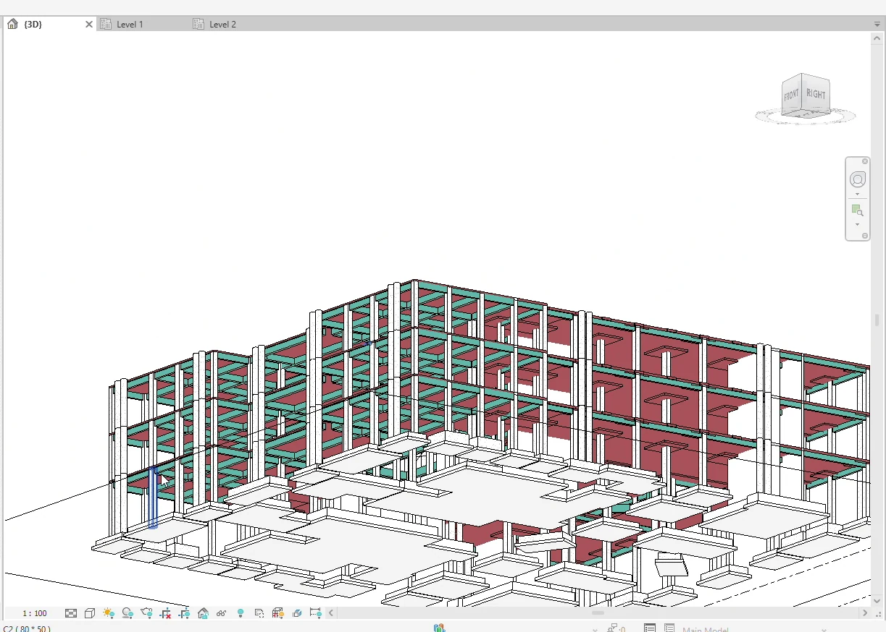

CAD-to-Revit Structural Modeling · Revit Add-in
Beam Modeling
Model regular and irregular beams from CAD across selected levels.
Use the CAD plan to place and type structural beams in Revit, from rectangular sections to irregular, L-shaped, T-shaped, and circular sections.
Establish the framing types once
Repeated beam geometry can share a Revit type. Read the available section data, select the levels that use the plan, and check representative framing on each level.
Reads beam boundary geometry from the CAD drawing
no manual tracing required
Supports standard rectangular, irregular sections, L-beams, T-beams, and circular beams
Reads beam dimensions from drawing annotations or from an external schedule in the CAD file
Multi-floor deployment
select multiple levels → model all beams across all floors in one operation
Automatic type recognition and grouping
identical sections share one Revit type
See Beam Modeling in Revit
Follow the on-screen steps from setup to the modeled result.
Manual Revit vs. Beam Modeling
| Task | Manual Revit workflow | With Beam Modeling |
|---|---|---|
| Establish section types | Read sizes from the plan or schedule and create the types in Revit. | Read drawing annotations or schedule data and group matching sections. |
| Place the beams | Trace the layout and place beams by section type. | Model the beam layout from the selected CAD geometry. |
| Repeat on matching levels | Copy framing or repeat placement and check each level. | Select the applicable levels and generate the framing together. |
Modeling a beam layout from a prepared structural CAD plan
Section data and Revit levels are ready. The repeated-floor scenario uses the same beam layout on all five levels and includes a framing review. These are planning estimates. Actual times depend on the model and setup.

One floor · 20 beams
Manual in Revit
35–65 min
Set up section types, trace and place the beams, then check framing.
Beam Modeling
1–1.5 min
Read the beam data, generate the floor, and check the placements.
33.5–64 min estimated savings
Five matching floors · 100 placements
Manual in Revit
80–140 min
Model the first floor, copy the framing to four levels, then verify.
Beam Modeling
2–4 min
Generate the layout across the five selected levels and review each level.
76–138 min estimated savings
See how Beam Modeling fits your workflow
Tell us what you’re modeling or reviewing in Revit. We can walk through the workflow and discuss compatibility, licensing, and support. Use Request Package to add the package to your request list.